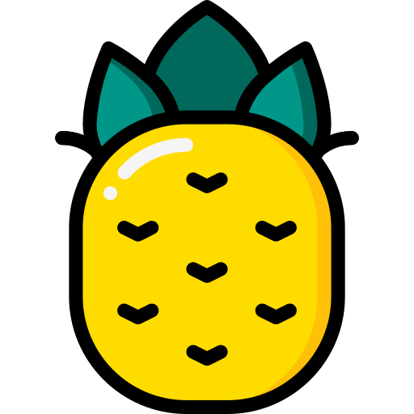

Reviews que hice de todo el contenido que consumo para que no se me olvide lo que vi
Carol and the end of the world
Plataforma:
Netflix
Thoughts:
Premisa chingona
Carol es una gran protagonista (lo que es impresionante)
El episodio del viaje con el papá
Los episodios del final medio experimentales siento que quedaban mejor al principio
La vi con mi abuela y a ella también le gustó
Netflix haz mas cosas así porfa
Cualquier serie que pueda tener un episodio entero sin su protagonista y aún así ser de los mejores episodios le sabe
La vi en español y la voz de Carol es perfecta
Tier:
A
Klaus
Plataforma:
Netflix
Thoughts:
Muy formuleica (es un pro porque está muy bien hecha)
La animación
Hermosa película
Medio cursi
También la vi con mi abuela y casi llora
Tier:
A
Saints Row The Third *
Plataforma:
Switch
Thoughts:
Estúpido af en el mejor de los sentidos
El combate y la progresión está divertido
De verdad no sabes con qué mamada te van a salir después
El framerate varía más que mis ganas de vivir (aunque es impresionante que llega a 60 en lugares cerrados)
La historia está cagafa pero no es nada especial
Ya lo terminé
Hay unas actividades que son una mentada de madre (lo jugué en hardcore but still)
El DLC está medio equis
Desearía poder usar la skin del inodoro antes :(
Tier:
A
Ori and the Blind Forest
Plataforma:
Switch
Thoughts:
El principio nmms casi lloro
El traversal es chefs kiss, me vengo cada que hago el bash
Me gusta la idea de que tú eliges cuando guardar
Los set-pieces son hermosos
Llegué a un punto donde tengo que picar muchos botones al mismo tiempo y el juego lo trata como lo más fácil del mundo (git good)
Estaría chingón que hubiera bosses
Ya lo terminé
Pensé que era un plataformer pero es un metroidvania, estaría decepcionado si el juego no fuera tan pinches bueno
Tier:
A
The Legend of Zelda: Skyward Sword HD
Plataforma:
Switch
Thoughts:
Nmms me vine cuando salió la espada maestra
Casi lloro con la despedida de Zelda nmms por qué me haces esto
Siempre te despierto yo dormil√≥n, prom√©teme que esta vez me vas a despertar tú üò≠üò≠
Nmms los controles que alguien me ayude no puedo ni voltear
Medio lento en empezar
Me dolió mucho usar controles tradicionales porque yo soy fan #1 de los motion controls pero se mamaron con lo estresante que es usarlos
Se nota que Zelda se quiere coshar a Link durísimo
Me gustaron la mayoría de bosses pero están super fácil
Tier:
Poor Things
Plataforma:
Cine
Thoughts:
Está rarísima pero en el buen sentido
Está cagada la neta
El principio no me gustó no entendí por qué está en blanco y negro
Jade dice que está muy chida la película de mujeres locas
Mientras va avanzando su ropa se hace más oscura
Tier:
A
Ted (Temporada 1)
Plataforma:
Cuevana xd
Thoughts:
Hace mucho no me río tanto con una serie
Muchos chistes sobre ser racista (?)
Tenía mucha vibra de Family Guy
Dios mío a quien se le ocurrió lo del camión homofóbico
No sé por qué tengo tantos Tier A pero es que si se lo merecen
Tier:
A
Saltburn
Plataforma:
Prime Video
Thoughts:
No sé qué me esperaba pero está 10 mil veces mejor de lo que esperaba
Todos en la película están muy hot
El chingado nerd me super engañó
Hay como 3 plot twist y todos están chingones
No sé qué escena estuvo peor la del cogerse la tumba o lo de la tina
Tier:
S
Doctor Who (Temporada 1 - ?)
Plataforma:
Doctor Who Online (amo al que creo eso)
Thoughts:
Rose es bien horny
El décimo doctor esta underrated pero me gusta que solo este una temporada
Tiene momentos bien hermosos
Cuando está bien feliz en el capítulo de las mascaras de gas por que no murió nadie pobrecito
El doctor le vale verga a quién mata las primeras temporadas no me acordaba
Tier: